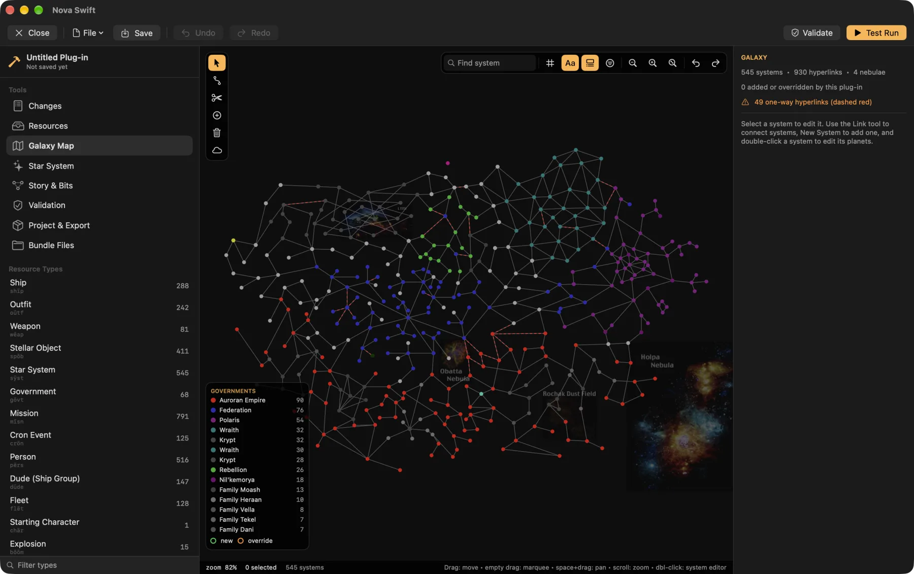
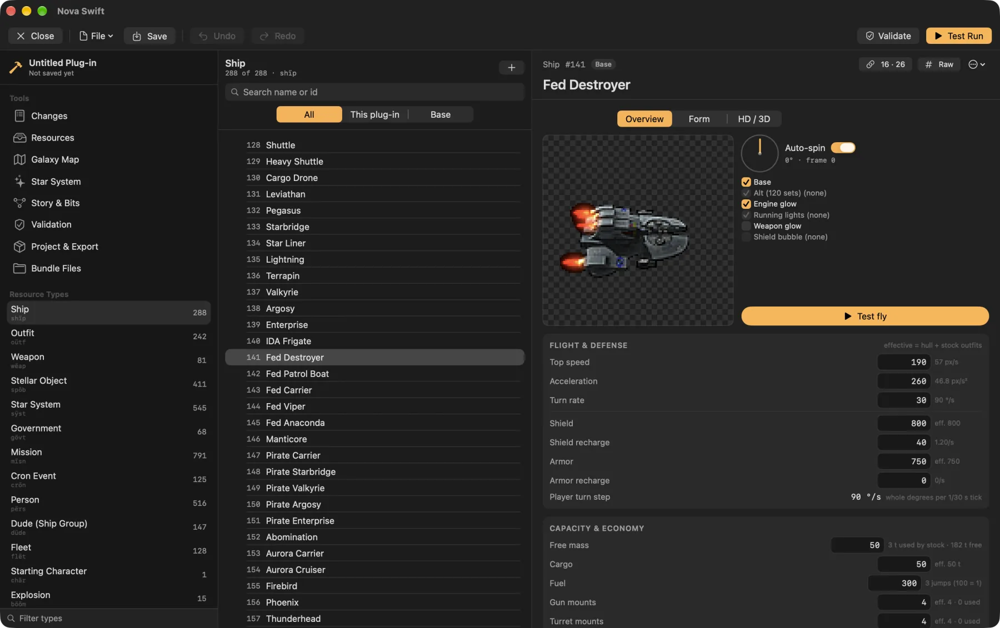
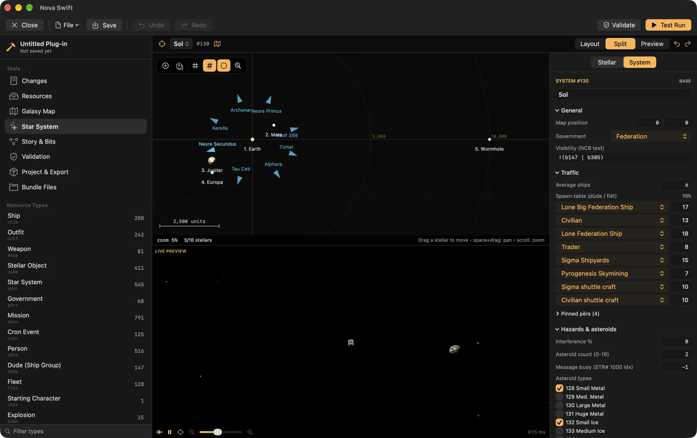

A plug-in editor that runs the game.
Edit any resource, draw the galaxy, lay out a system, then fly your plug-in without leaving the editor. Built into the Mac app, with an early desktop version in the Linux and Windows beta.



Fly it before you ship it.
Test Run starts a real game on your plug-in. Spawn fleets as friends or enemies, grant outfits, set control bits, start missions and jump anywhere, with god mode on while you look around.
Everything a plug-in needs.
- Every resource typeForms for the main EV Nova types, checked byte for byte against the stock data, with a hex view for the rest.
- Galaxy mapDrag systems, draw and erase hyperlinks, and set government colours and nebulae.
- Star systemsPlace planets and stations with their real sprites, beside a live game preview.
- Test runStart a game on your plug-in with a debug panel: spawn fleets, grant outfits, set bits, start missions.
- Story toolsA control-bit index and a mission flow graph, so you can follow a storyline end to end.
- Graphics and soundImport PNG and WAV, edit ship hardpoints, attach HD art.
- Only your changesA plug-in holds just what you added or changed. The base game stays untouched.
- Works in the originalSave as
.rezor a classic resource file that EV Nova itself can load. HD art rides along as an extra layer the original ignores. - Share itList it in the community catalog and players install it in one tap.
In the Mac app today
Open Plugin Editor next to Plug-ins on the main menu. It takes over the window with a three-pane layout: resource types and tools, a list, and an inspector with a live preview.
The desktop editor
The Linux and Windows beta includes its own editor with the same idea: galaxy, system and story canvases, an inspector and previews. Open Plugin Editor from the main menu. It's early and has rough edges, so report anything odd.
Making a plug-in
From a blank plug-in to a new ship, a system and a mission, then sharing it.
Read the guideCommunity plug-ins
See what others have built, and what yours could sit next to.
Browse the catalogResource formats
The reverse-engineering notes document every field the engine reads.
Read the notes